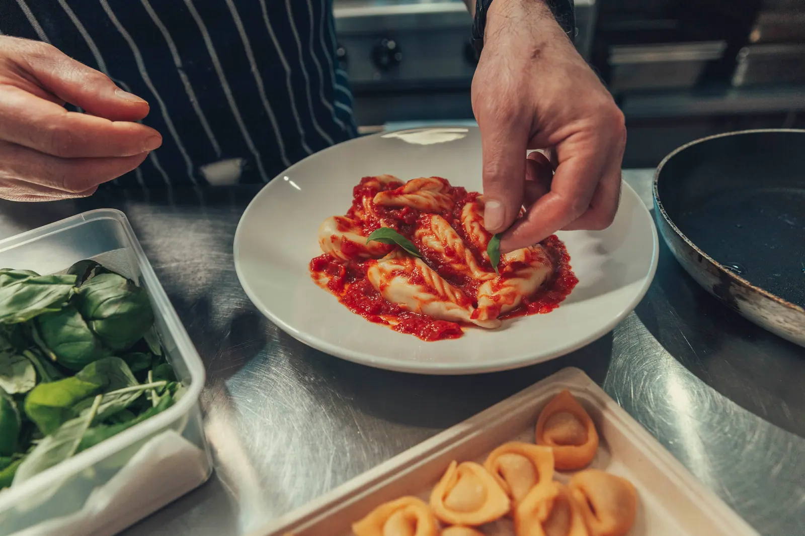
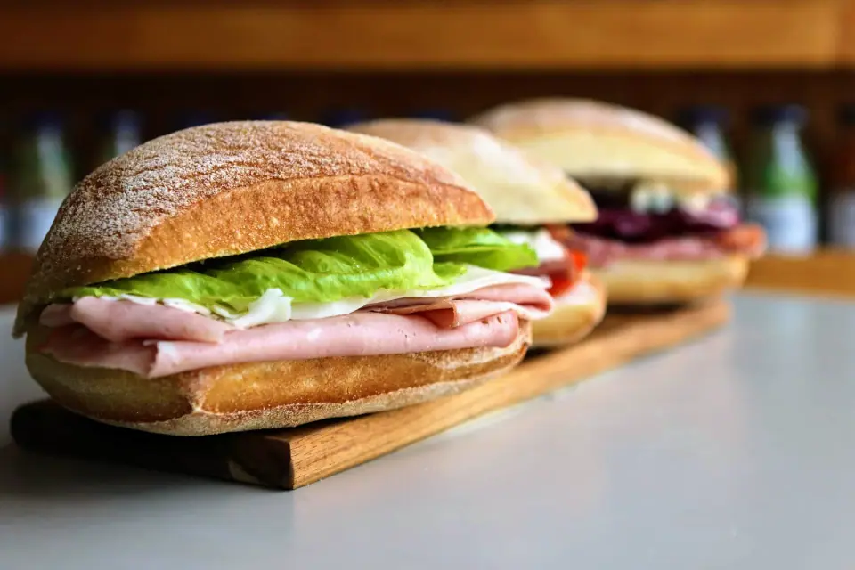
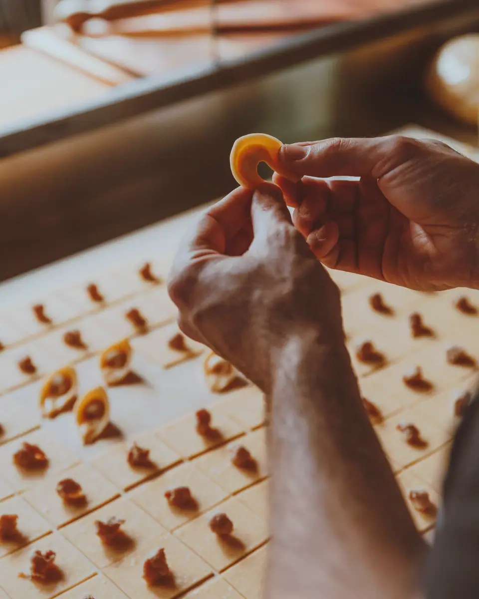
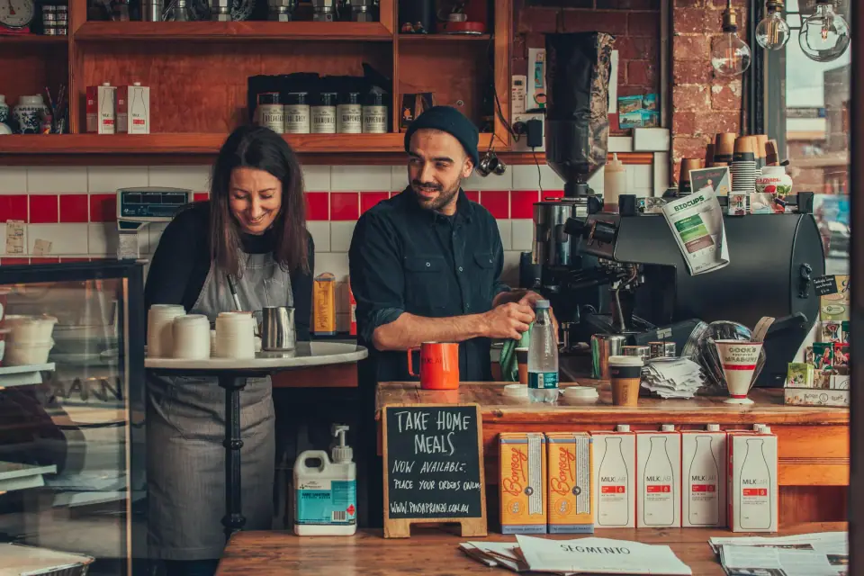
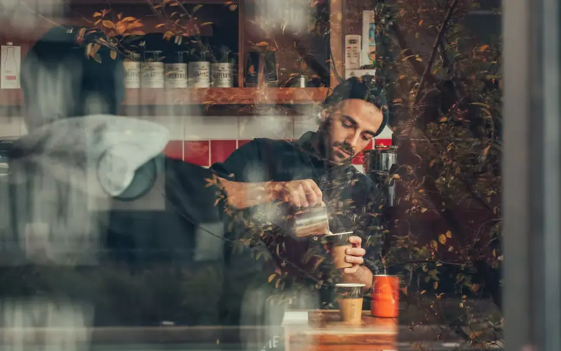
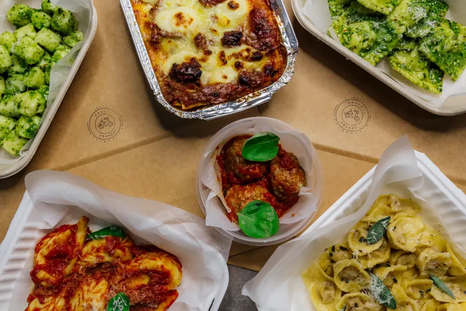

Paninoteca & pasta · Preston, Melbourne
From Sardinia, with love.
Come and join us for an espresso or a bowl of house made pasta.
- Now
- HoursTue to Fri 7am–3pm
Sat 8am–3pm
Sun & Mon closed - Address166/168 High Street, Preston VIC 3072
- Phone(03) 8456 1018
The menu, by the hour
Colazione, panini, then pasta
Breakfast until sold out, small plates from 11am, fresh pasta from 12pm.


Founded in 2016
At our core, we are a paninoteca, following the Italian tradition of minimal but quality ingredients.
All of our panini are made fresh to order on Italian ciabatta rolls, using imported and local products.

Find us
On High Street, Preston
| Monday | Closed |
|---|---|
| Tuesday | 7am–3pm |
| Wednesday | 7am–3pm |
| Thursday | 7am–3pm |
| Friday | 7am–3pm |
| Saturday | 8am–3pm |
| Sunday | Closed |
- eGift cards are available online.

